Cargás el perfil del negocio una vez. Cada mes PlanIA arma el plan de contenidos con el copy listo, vos lo revisás y se lo mandás a tu cliente.
Nada sale a tus redes sin tu ok.
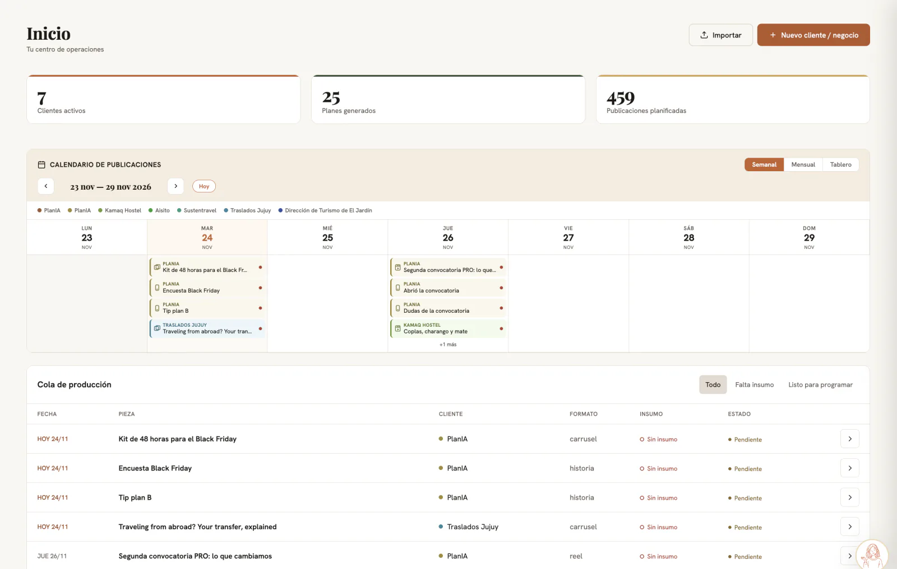
Si manejás las redes de varios clientes, PlanIA te da un flujo profesional de principio a fin: perfil estratégico → plan mensual con copy → aprobación del cliente → seguimiento de publicaciones → informe de métricas listo para enviar. La IA no reemplaza tu criterio — lo potencia para que puedas dedicar más tiempo a la estrategia y menos a la operativa.
No solo títulos ni ideas sueltas. PlanIA arma el mes con publicaciones, carruseles, reels e historias, y cada pieza llega con su copy, el insumo visual que hace falta y las indicaciones para el cliente.
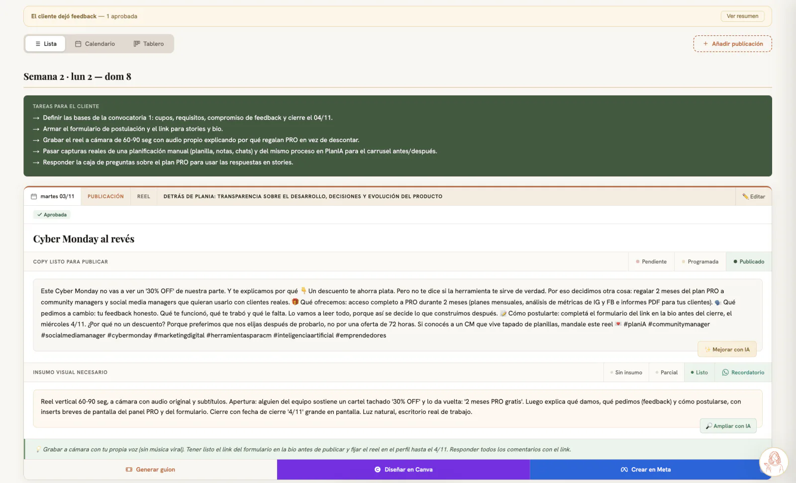
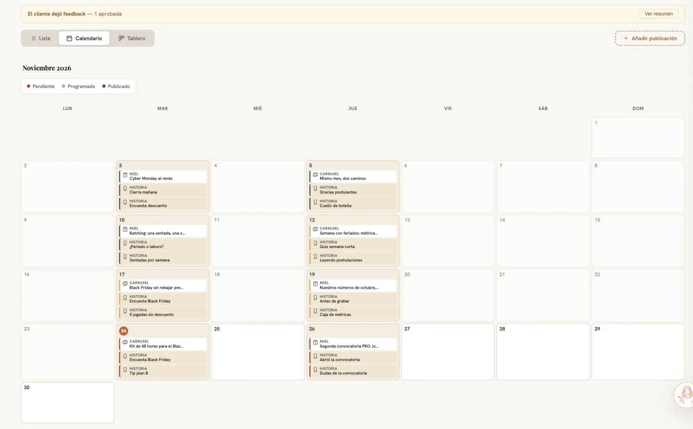
Cada pieza en su día, con el color de su estado. De un vistazo ves qué semanas están cubiertas.
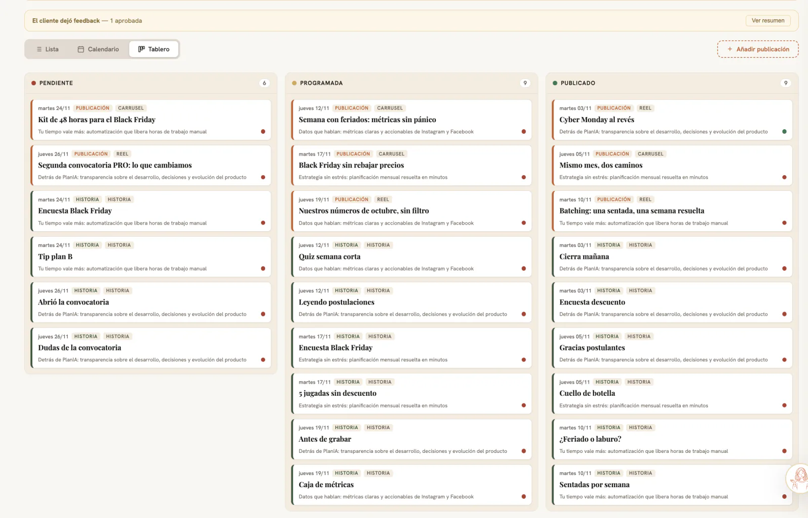
Arrastrás cada pieza entre Pendiente, Programada y Publicado a medida que avanzás con el mes.
Generás un enlace privado del plan y se lo mandás. Tu cliente lo abre en el celular, lee cada pieza y la aprueba o te pide cambios. Vos ves sus respuestas dentro del plan.
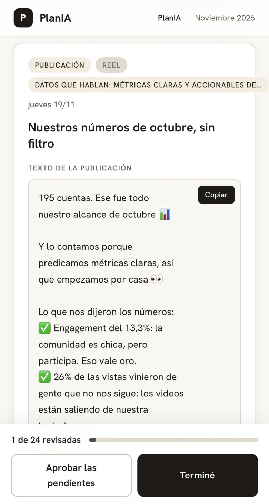
Si una publicación no te cierra, no hace falta regenerar el mes. Con “Mejorar con IA” ajustás el copy de esa pieza: elegís una mejora rápida o le escribís qué querés cambiar.
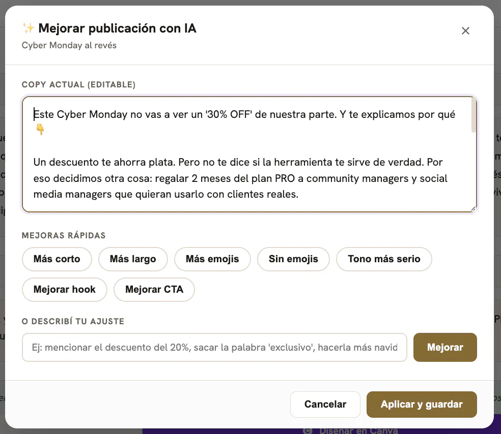
En cada reel del plan podés generar el guion: el hook de los primeros segundos, las escenas con su duración y el texto en pantalla, y el cierre con el llamado a la acción.
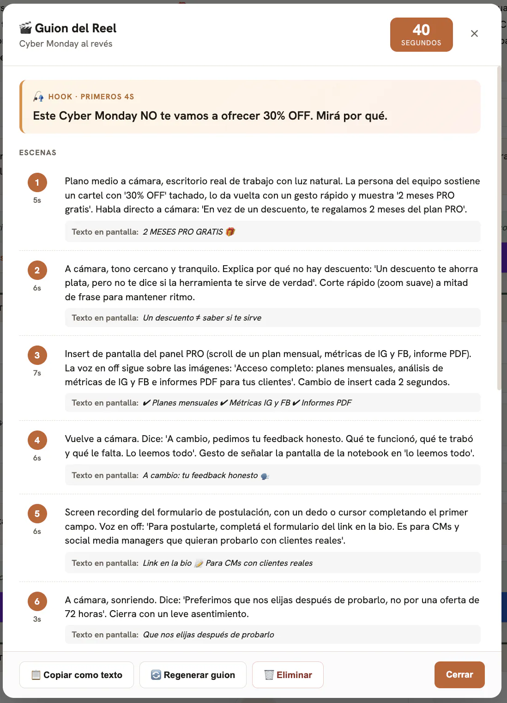
Antes de escribir una sola publicación, PlanIA construye un perfil estratégico completo del negocio. Vos lo revisás, ajustás lo que haga falta y lo validás con el cliente. Eso hace que cada plan generado esté anclado en la realidad del negocio y en tu criterio como profesional.
Junto al perfil guardás la marca del cliente: el logo, hasta 8 colores y 2 tipografías. Queda a mano cada vez que hay que diseñar una pieza.
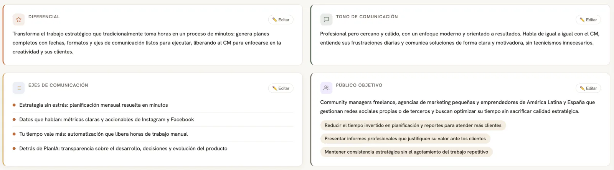
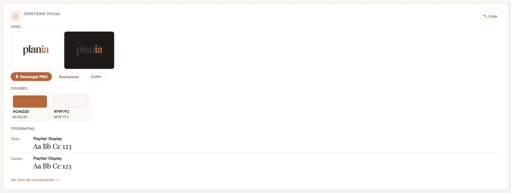
Conectás la cuenta del cliente con Meta y PlanIA trae sus datos reales de Instagram y Facebook. Después la IA escribe el informe en lenguaje simple — vos lo revisás, ajustás lo que necesites y lo exportás en PDF listo para enviar.
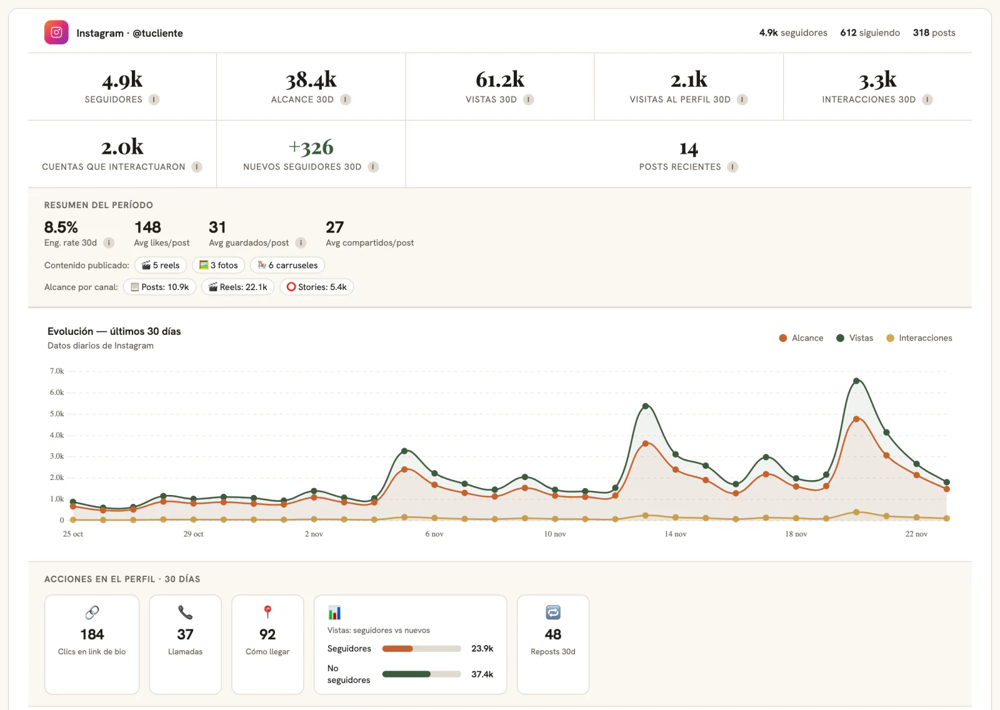
Captura con datos de ejemplo.
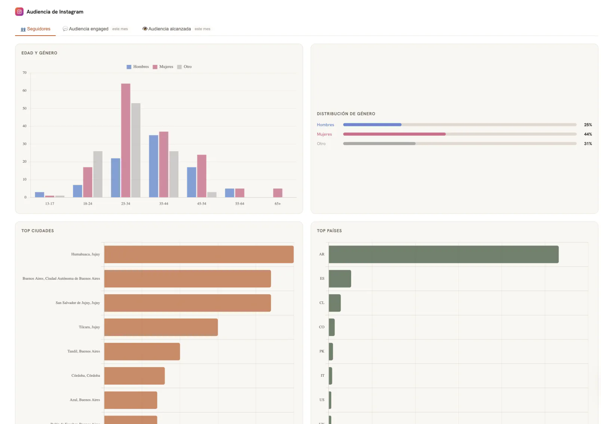
La audiencia de Instagram por edad y género, y las ciudades y países desde donde te siguen. Son datos de la API de Meta, no estimaciones.
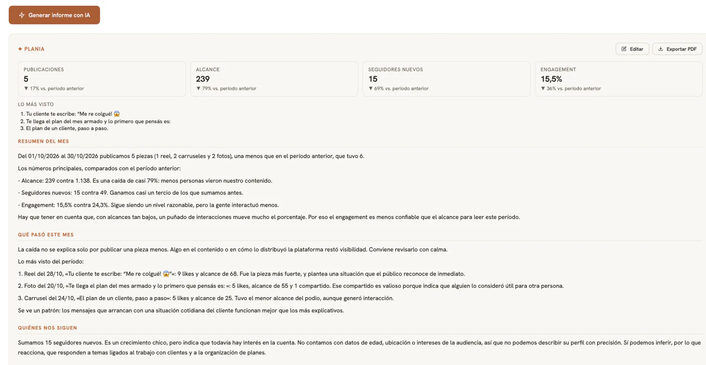
La IA escribe el informe del mes con los números, lo que pasó y los próximos pasos. Lo editás a tu criterio y lo exportás en PDF.
El inicio de PlanIA junta a todos tus clientes en una sola pantalla: qué se publica esta semana, qué piezas todavía esperan material y cuáles ya están para programar.
Uma es la asistente de PlanIA. Le preguntás cómo hacer algo y te responde con los pasos, ahí mismo, mientras trabajás.
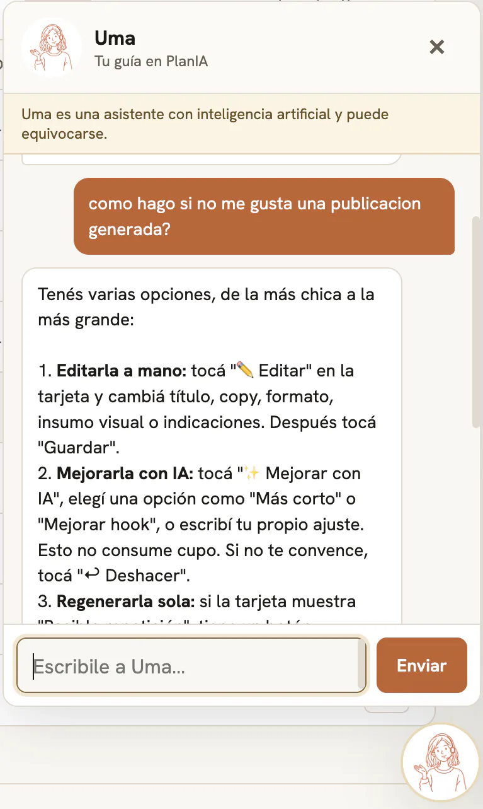
PlanIA se abre desde el navegador del celular: revisás el plan, cambiás el estado de una pieza o copiás un texto estés donde estés.
Cada pieza tiene su botón “Diseñar en Canva”: abrís el diseño con un clic y seguís donde lo dejaste.
Copia el texto de la pieza y abre Meta Business Suite para que la crees ahí. Publicar lo decidís vos.
El plan, el perfil estratégico, el informe de métricas y la guía de insumos para el cliente salen en PDF.
Elegís cómo ver la app según la hora y tu pantalla.
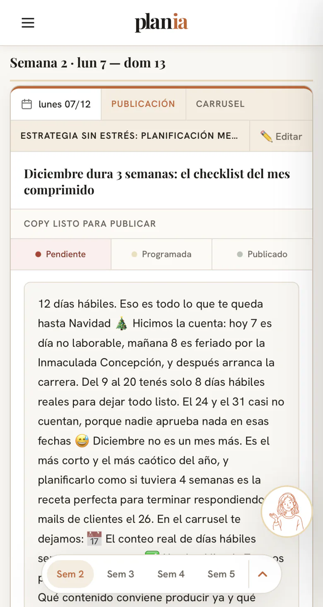
Cinco pasos. Sin vueltas.
Datos del negocio, sector, zona y tipo de contenido.
Diferencial, tono de comunicación, ejes de contenido y público objetivo. Todo editable.
Elegís el mes, la IA genera cada publicación con copy completo y lo distribuye en el calendario.
Ajustás lo que haga falta con tu criterio, abrís el diseño en Canva y le mandás el enlace: tu cliente aprueba o pide cambios desde el celular.
Actualizás las métricas reales de Meta y la IA escribe el informe del mes en minutos.
Probá PlanIA sin límite de tiempo: un plan completo, gratis. Sin tarjeta de crédito.
Mejorar el copy con IA, generar guiones de reel, exportar PDF y compartir enlaces de aprobación no consumen generaciones de plan. Las generaciones se usan al crear o regenerar un plan completo.
Pagos con tarjeta en USD desde cualquier país · En Argentina también podés pagar en pesos con MercadoPago · Los planes se contratan dentro de la app · Tus datos se guardan de forma segura en la nube con Firebase (Google)
La inteligencia emocional, la creatividad y el conocimiento profundo del cliente son cosas que solo una persona puede aportar. PlanIA es una herramienta que optimiza tu flujo de trabajo — genera la estructura y el contenido base para que vos puedas dedicar más tiempo a lo que realmente importa: la estrategia, la relación con el cliente y la creatividad.
PlanIA no vende ni comparte tus datos con terceros. Los datos de tus clientes se guardan de forma segura en Firebase (Google), encriptados y accesibles solo con tu cuenta. No hay telemetría oculta: la medición de visitas solo corre si la aceptás.
La forma en que PlanIA crece y mejora es junto con las personas que la usan. Dentro de la app vas a encontrar un botón de sugerencias y feedback — cada mensaje lo leemos personalmente. Si una mejora es solicitada por la mayoría de los usuarios, hacemos todo lo posible por implementarla.
Empezá con un cliente, un plan y un informe. Gratis y sin tarjeta.
Crear mi primer plan gratis